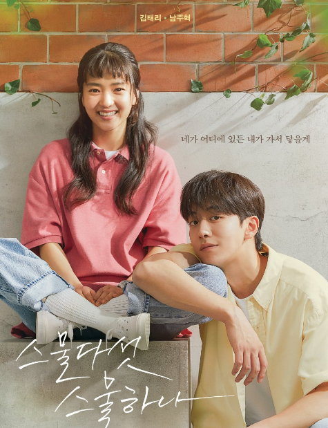
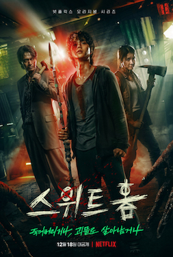
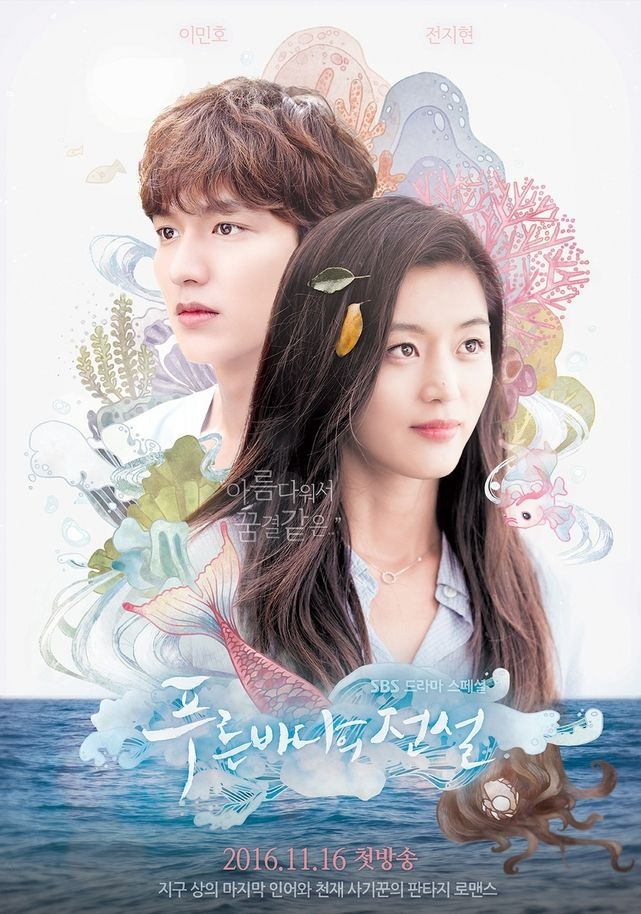
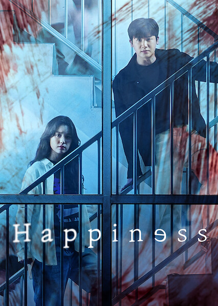

A narrative about individuals who, for a variety of reasons, fail in life but then unexpectedly get a mystery invitation to take part in a survival game with a chance to win more than 38 million US dollars. The game is played on a remote island, and the players are imprisoned until a winner is determined.
All of us are Dead
A sudden outbreak of zombies threatens the kids' safety as the series is set at a high school in South Korea.

Twenty Five Twenty One
A teenage fencer with lofty goals meets an industrious young man trying to restore his life at a moment when dreams seem out of reach.
Crash Landing On You
Successful South Korean businesswoman crashes in the North Korean section of the Demilitarized Zone (DMZ) after being caught in an unexpected storm while paragliding near Seoul, South Korea. She then encounters an army captain in the Korean People's Army who decides he will help her hide.
Descendants of the Sun
Captain Yoo Shi Jin of the South Korean Special Forces and Doctor Kang Mo Yeon, a surgeon at Seoul's Haesung Hospital, start dating.
Goblin
God transforms Kim Shin into a goblin, tasked with saving some people from a life of sorrow, when Kim Shin is faced with death rather than honour after fighting a heroic battle. Kim Shin, however, is finding immortality exhausting, and he longs to meet the foretold human spouse who may set his spirit free.
Vincenzo
The story of Vincenzo focuses on a member of the same-named Italian Mafia who travels to his native Korea in search of gold. As he joins the battle against the wicked conglomerate of Babel, his motives shift and his adversaries adapt.

Sweet Home
Cha Hyun-soo moved out of his house and into an apartment following an unanticipated family tragedy. Monsters soon start attempting to exterminate humanity. Realizing that monsters are hiding everywhere outside, the residents of the flat are stuck inside the structure.

Legend of the blue sea
This drama tells the love story of a conman and a mermaid who travels across the ocean to find him. It is based on a traditional Joseon legend from Korea's first collection of unofficial historical tales about a fisherman who captures and releases a mermaid.

Happiness
Only human blood can satisfy patients' unquenchable hunger. As their new apartment complex is quarantined due to a breakout of cases, chaos breaks out in South Korea, and the SOU specialist and investigator are caught in the middle of it.
Hospital Playlist
Five doctors who have been buddies since they started medical school in 1999 are profiled in Hospital Playlist drama.
Hotel Del Luna
The hotel that serves the dead has been tied to the soul of Jang Man-wol as a result of a significant sin committed more than a millennium ago. Due to the deity Mago's influence, she meets Gu Chan sung's father and strikes a deal: in return for his life, his son will serve for her 20 years from now.